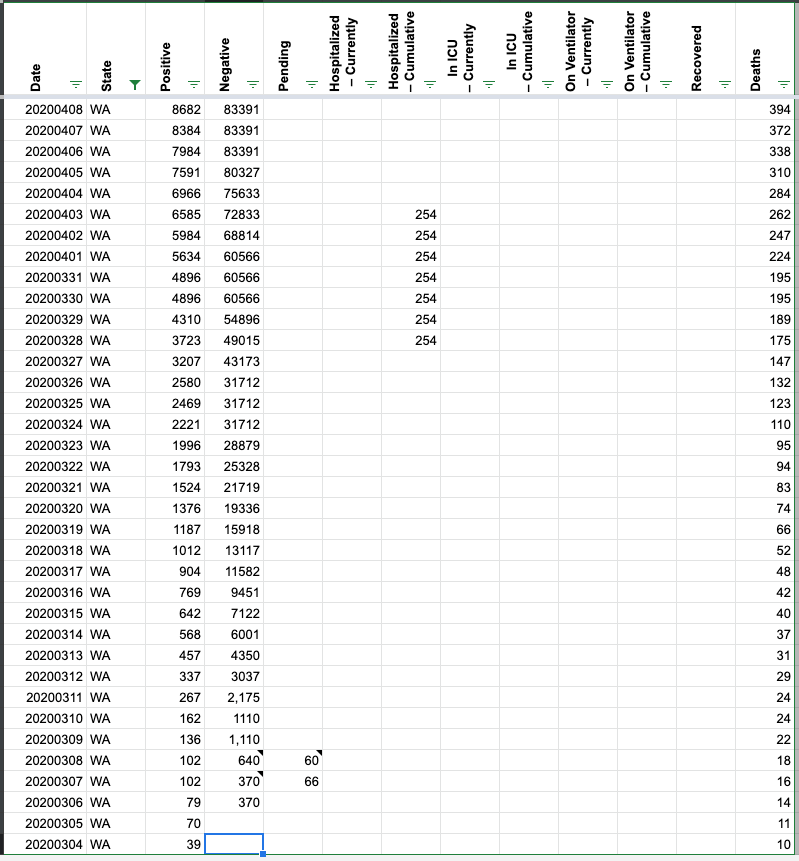

Washington Data appears off
Issue number 139
OregonCarrot opened this issue on April 4, 2020 at 12:50 pm
The number of cases in the covidtracking data does not match the cases listed in the DOH of Washington. examples: 3/14- 568 cases in the covidtracking data, but 778 in the DOH of Washington data
3/15 642 in the covid tracking data, but 906 cases in the DOH of Washington data
These examples show that it is not just an issue of what time of day the case number is recorded, as Covidtracking’s cases on the 15th are less than the DOH of Washington’s case number on the 14th.
It appears almost every day has different data between the two sources. Should the Covidtracking data match the DOH of Washington data, as it is very likely to be the most accurate?
Comments
Thank you! It looks like a lot of people are working hard to make everything as accurate as possible, which is awesome and definitely appreciated by those of us without the technical know-how.
Hello,
Thank you for getting this back to the top of my priority list. I have updated the CTP Washington data to match the data provided by the state. I did find a discrepancy in what is reported - WA’s daily Pos/Neg data does not match the Positive data they publish, so I have not resolved the CTP/WA negative data at this time.
Washington is constantly updating its most recent data, so we will need to modify this data from time to time
Before 
After